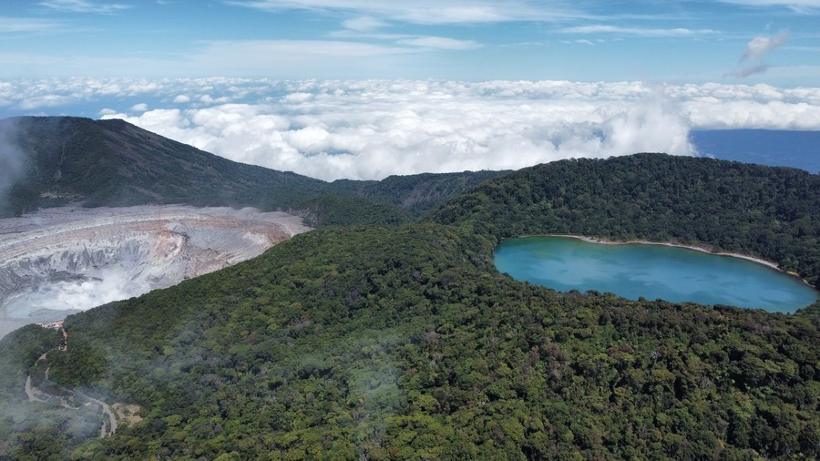
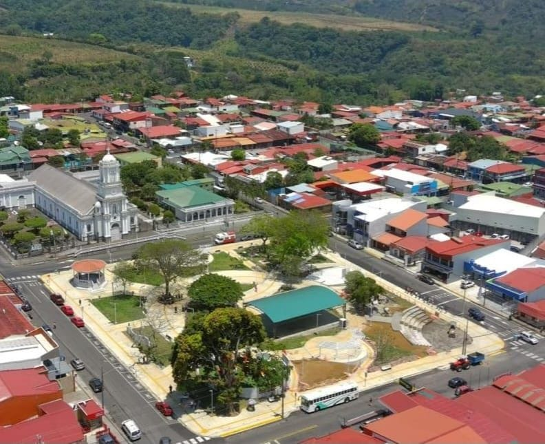
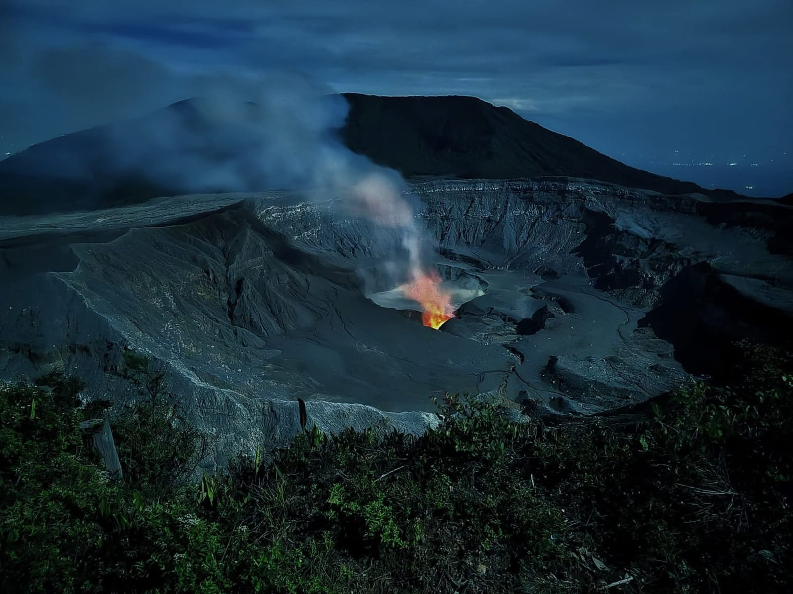
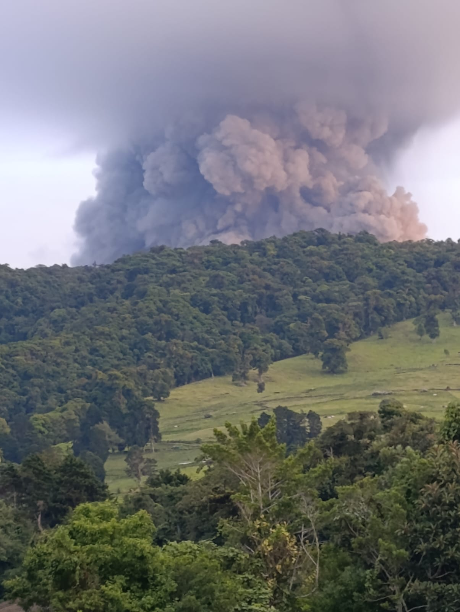
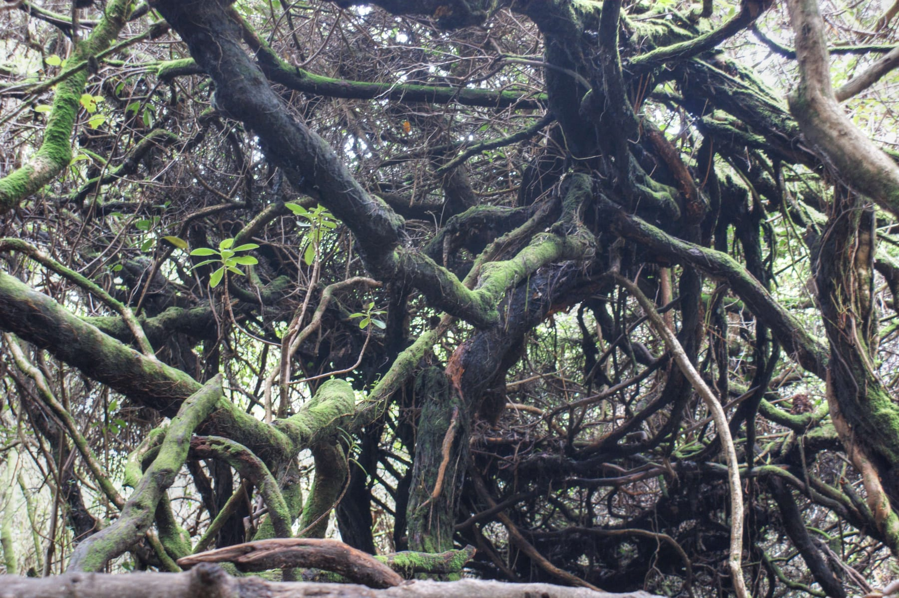
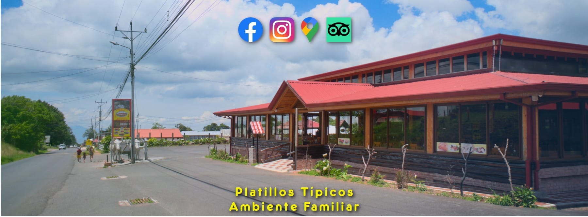
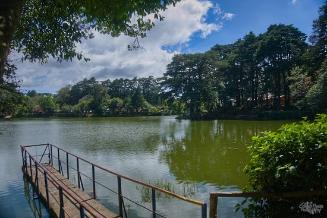

A territory where colonial history, extraordinary biodiversity and a cultural identity deeply rooted in volcanic soil converge in perfect harmony.
🗓️ Founded October 15, 1901 · Province of Alajuela, Costa Rica"Poás is where the earth breathes, water springs from the stones, and life flourishes in every corner."
The canton of Poás is one of the most fascinating corners of Costa Rica. Nestled on the slopes of the imposing Central Volcanic Mountain Range, this territory combines in perfect harmony a rich colonial history, extraordinary biodiversity and a cultural identity deeply rooted in the land.
Officially known as the "Water Canton of Costa Rica", Poás possesses an enormous number of natural springs that emerge from the slopes of the volcano that gives it its name, supplying a large portion of the Central Valley.
The history of the territory we know today as the canton of Poás stretches back to times before the Spanish conquest. Archaeological investigations at the sites of Río Prendas, Poás, Quebrada Caña, Solís and San Pedro have identified two settlement patterns:
The botos inhabited the slopes of the volcano and their name would also be given to the famous Laguna Botos, an extinct crater that today forms part of the National Park.

The first document mentioning the hamlet of Poás dates from 1782, when the parish priest Juan Manuel López del Corral referred to five hamlets in the region: Los Targuases, La Alajuela, Las Ciruelas, Río Grande and Pías.
The name "Poás" has several interpretations. Some historians link it to the Latinized form of "pías," referring to thorny plants. Others relate it to the indigenous toponym west of the Poás River.
The first colonizers included families such as the Herrera, Murillo, Chaves and Zamora.

"Poás is one of the oldest towns in Costa Rica, with a truly colonial origin that its inhabitants carry with pride." — Historian Percy Rodríguez Argüello
Poás Volcano is an active stratovolcano reaching 2,708 meters above sea level, located at the heart of the Central Volcanic Mountain Range. Its main crater measures approximately 1.6 km in diameter and 300 meters in depth, making it one of the largest active craters in the world.
The volcanic massif is composed of three distinct craters. The main one houses the famous Laguna Caliente, whose sulfur-hypersaturated waters give it a turquoise or grayish hue. The second, extinct crater contains the beautiful Laguna Botos, a cold-water lake surrounded by cloud forest.
Its origin is due to the subduction of the Cocos Plate beneath the Caribbean Plate, a process that began approximately one million years ago.

Poás Volcano has a documented eruption history dating back to the 19th century. The most notable eruption occurred in 1910, when an ash column rose to 8,000 meters in height, considered one of the largest phreatic eruptions of the 20th century in Central America.
Geothermal activity is permanent: fumaroles emitting sulfur dioxide and water vapor can be observed from the crater. On occasion, pressure geysers burst from the lake reaching up to 250 meters in height.
In April 2017, an eruption of gases, ash and rocks caused significant damage. Following safety improvements, the park partially reopened in August 2018.

Established on January 25, 1971, it covers approximately 65 km² and is the most visited national park in Costa Rica. Visitors can access it every day from 8 a.m. to 4 p.m. through prior online reservation via SINAC.
Its main trails: Crater Trail (0.5 km), Laguna Botos Trail (1.4 km) and Escalonia Trail (1 km) through the cloud forest.
The canton is home to a diversity of ecosystems influenced by altitude, volcanic activity and precipitation patterns. Elevation ranges from 800 to 2,708 masl, generating a climatic gradient that supports extraordinary biodiversity.
Among the most emblematic species:

Poaseño cuisine is the reflection of a fertile land and a hard-working people. The foods produced in the canton have unique flavors shaped by the mineral richness of the volcanic soil and the high-altitude climate.
Along the road that climbs to the volcano, small businesses and roadside stands offer strawberries, cheeses, jams, biscuits and flowers. This tradition of rural commerce is an integral part of the canton's tourism experience.

An Andean root grown in cold highland soils, seasoned with local spices. A classic side dish of the Costa Rican casado.
A traditional artisan sweet with a soft texture and delicate flavor, considered a regional delicacy.
A traditional cake prepared for special occasions and community celebrations in the canton.
An artisan conserve made with fruit harvested from local orchards on the slopes of the volcano.
Grown on the volcanic slopes. Available fresh, as jams, ice creams and artisan desserts.
Dairy farms produce fresh cheeses, sour cream and dairy products using traditional methods.
Grown in volcanic soil, internationally recognized for its balanced acidity, deep aroma and exceptional flavor.

🚗 Route 1: San José → Alajuela → Fraijanes → Poás Volcano (50 km). The most commonly used, with good signage and services.
🚗 Route 2: Alajuela → San Pedro de Poás → Fraijanes → Poás Volcano (55 km). Passes through the canton's main city.
🚗 Route 3: Via Varablanca, connecting the volcano with Puerto Viejo de Sarapiquí.
💡 Tips: Bring comfortable clothing, closed-toe shoes and warm layers. Arrive before 9 a.m. for the best views. Book online at SINAC in advance.
"Poás is the water canton of Costa Rica: from its volcanic depths spring the water, life and history of a community that looks to the future without forgetting its roots." — Poás: History, Nature and Culture · 2026